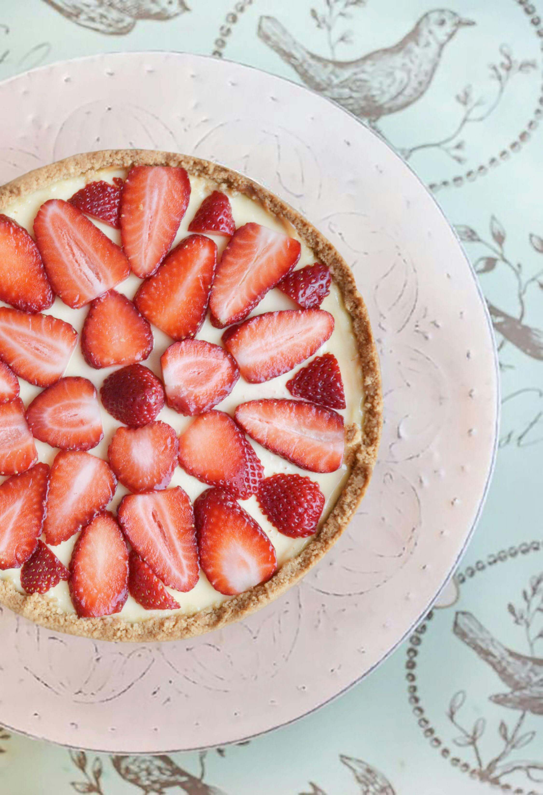

Sobre ELIA-Postres
ELIA-Postres Es una tienda de postres artesanales creados con delicadeza, detalles que enamoran y sabores que convierten lo simple en un momento especial.Fundada por Eli Bard Guastoni, la marca nace con la visión de hacer de cada momento compartido un recuerdo inolvidable, pensados para eventos importantes y para situaciones cotidianas que se transforman en momentos especiales. Nuestra línea de postres incluye Petit Fours, Alfajores artesanales y Clásicos. En ELIA-Postres creemos que cada detalle importa, cuidamos cada ingrediente y nos encargamos de que cada producto sea perfecto para tu momento.
